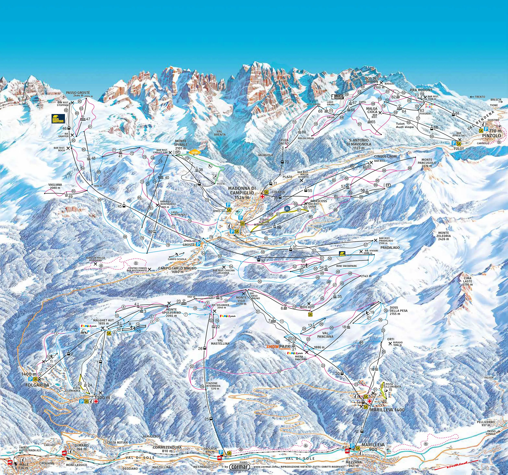

Interaktywna mapa tras
Madonna di Campiglio · Pinzolo · Folgarida · Marilleva
Miejscowości i stacje
Szczyty
Schroniska i posiłki
Tereny, jeziora i snowparki
Kółko / dwa palce, aby przybliżyć
Przeciągnij, aby przesunąć · Dotknij punktu
+
−
⤢
Aa